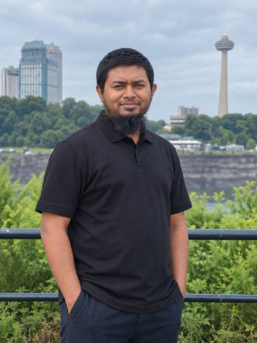
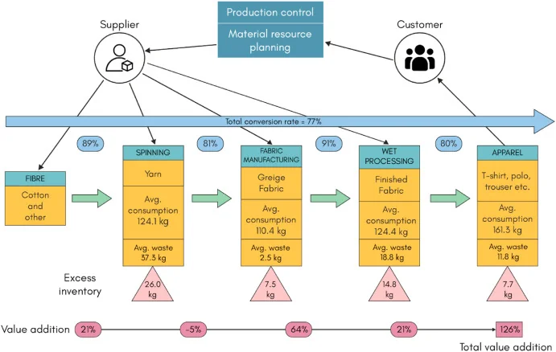
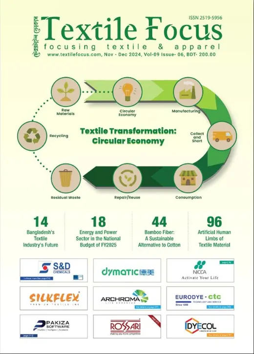
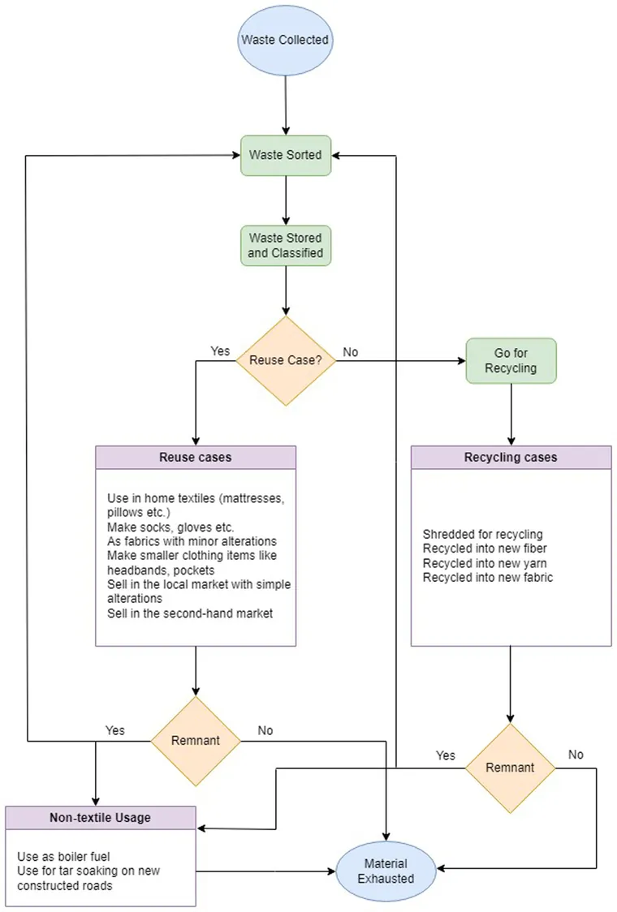
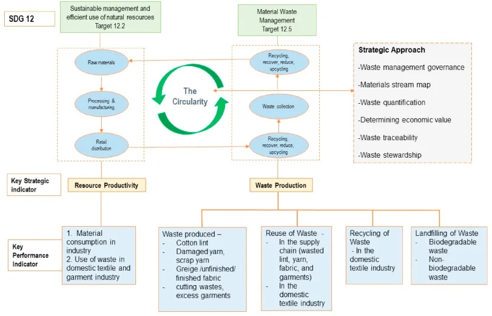
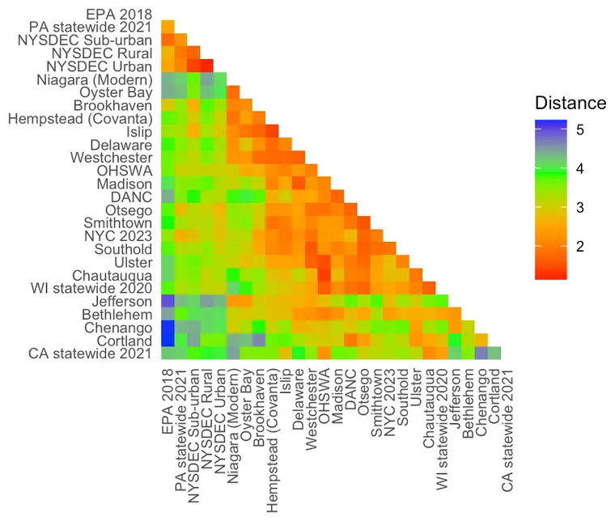
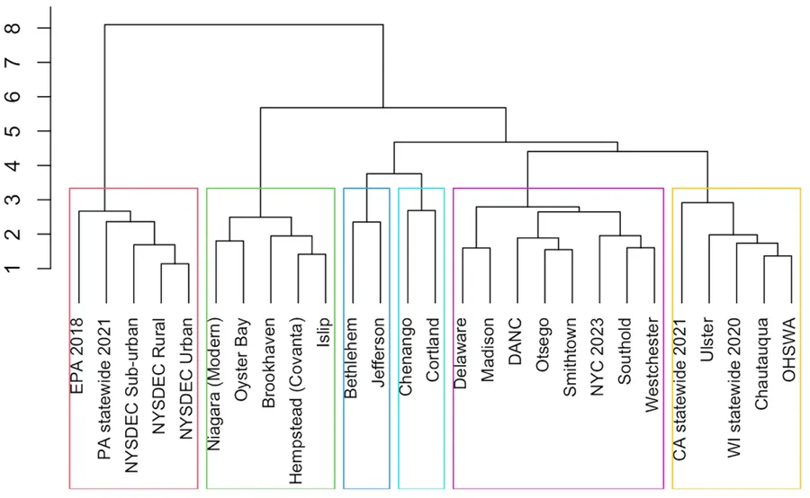
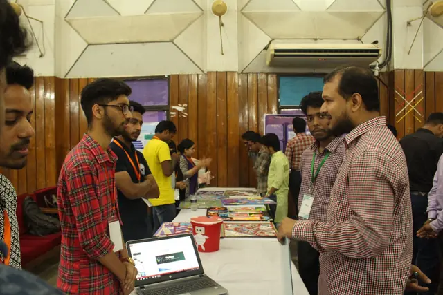
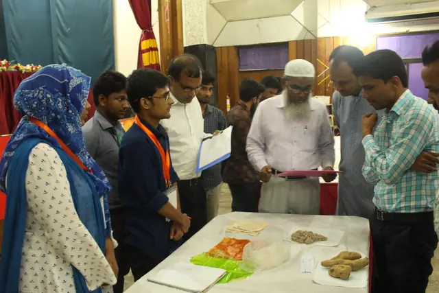
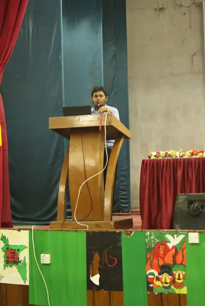

About me
Educator, Researcher, and Trade Editor in Textile and Apparel Engineering, Circular Economy, and Waste Data
I work across three connected areas: the engineering and management of textile and apparel production, environmental sustainability and the circular economy in that industry, and the characterization and analysis of solid waste. The common thread is measurement — of where material goes, what is lost along the way, and what the resulting data can tell industry and policy.
Who I am
I am a PhD candidate in Technology, Policy and Innovation in the Department of Technology, AI and Society (formerly the Department of Technology and Society) at Stony Brook University, and a researcher at the Waste Data and Analysis Center (WDAC). Before coming to the United States in 2022, I taught textile engineering in Bangladesh for eight years, most recently as Assistant Professor of Textile Engineering Management at the Bangladesh University of Textiles (BUTEX). I started on a weaving floor as a production officer at Envoy Textiles, which is where I first noticed how much material a factory throws away and how little anyone measured it.
What I like
When I am not working I like to spend time with my family and friends. As a father of three, I love playing with my children and taking them places. I find cooking therapeutic and travelling inspiring.
Where I am going
My aim is to bring the measurement methods of waste systems research to the textile and apparel value chain: to establish where the industry’s waste actually goes, which recovery routes are worth investing in, and how policy can work in a supply chain with a large informal sector. Because waste arises at every stage, from fibre to finished garment to end-of-life, the answers hold together only when the chain is treated as one system. I want to do that work in research, policy or industry, and to train the engineers and managers who will carry it forward.

- Based in
- Johnson City, New York
- Affiliation
- Department of Technology, AI and Society, Stony Brook University
- Center
- Waste Data and Analysis Center (WDAC)
- Expected
- PhD, May 2027
- Fields
- Textile and apparel engineering and management; circular economy; solid waste characterization; compositional data analysis
- Editor
- Managing Editor, Textile Focus and Denim Focus
- Recognition
- 2026 EREF Scholar
Three areas of work
Textile and Apparel Engineering and Management
Nine years in the Bangladesh sector as engineer, assistant professor, researcher and editor. Material stream mapping across the production chain, productivity and safety research across twenty-five garment factories, and Managing Editor of Textile Focus and Denim Focus.
Environmental Sustainability and Circular Economy
Circularity of pre-consumer textile waste, the informal recovery market in the Mirpur cluster, a circular-economy model for SDG 12, and the NYSDEC report on recycling and the circular economy.
Waste Characterization and Data Analysis
Statewide municipal solid waste characterization in New York at the Waste Data and Analysis Center, and a compositional-data framework for comparing whole waste systems. 2026 EREF Scholar.
Education
- 2022 – 2027 (expected)Ph.D., Technology, Policy and Innovation
Department of Technology, AI and Society (formerly Technology and Society), Stony Brook University, New York
Dissertation: Measuring and Comparing Municipal Solid Waste Systems in the United States: Multivariate Evidence for Policy Design and Evaluation - 2019M.S., Management of Technology
Bangladesh University of Engineering and Technology (BUET), Dhaka - 2013B.Sc., Textile Engineering (Management)
Bangladesh University of Textiles (BUTEX), Dhaka
Appointments
- Aug 2022 – presentPhD Researcher, Solid Waste Characterization & Policy
Waste Data and Analysis Center, Stony Brook University - 2018 – 2022Assistant Professor, Textile Engineering Management
Bangladesh University of Textiles (BUTEX), Dhaka - Nov 2020 – Dec 2022Research Assistant, NIPOSH
Network to Integrate Productivity and Occupational Safety and Health improvements — Ahsanullah University of Science and Technology, University of Southern Denmark and BGMEA - 2016 – presentManaging Editor
Textile Focus (and later Denim Focus), Dhaka - 2014 – 2018Lecturer, Textile Engineering Management
National Institute of Textile Engineering and Research (NITER), Savar - 2013 – 2014Production Officer, Weaving
Envoy Textiles Limited - 2011 – 2015Technical team member (part-time)
Bangladesh Textile Today
Textile and apparel engineering and management
Supporting Sustainable Transformation of the Textile and Apparel Industry
Nine years inside Bangladesh’s textile and apparel sector, on the production side of the value chain: measuring material and labour flows through factories, testing whether productivity and worker safety move together, and translating both for an industry readership.
Material flow in apparel manufacturing
A knit garment enters a factory as a roll of fabric and leaves as a carton, and somewhere between the two a fifth of the material stops being product. Bangladesh’s apparel industry reports its performance in export dollars and its waste in truckloads, neither of which tells a manufacturer where material is actually lost. I mapped the material stream through knitwear factories in mass units — fabric in at the store, panels out of cutting, garments out of sewing, cartons at export — computing a conversion rate at each transition rather than a single plant-level figure. Extended across the whole production chain — from fibre through spinning, fabric manufacturing and wet processing to the finished garment — the same method gives a total conversion rate of 77 per cent.

The mapping shows that cutting is where the loss concentrates. The store and sewing transitions each retain between 97 and 99 per cent of incoming mass; the cutting room retains 80 to 82 per cent, which accounts for nearly all of the gap between fabric purchased and garment shipped. It is also the stage whose output is cleanest and most homogeneous, which makes it the realistic entry point for fibre recovery rather than the post-consumer stream that attracts most policy attention. The measurement itself is ordinary industrial engineering done carefully: standardised units, a defined boundary at each stage, and reconciliation of store records against floor weighing.
The work was published in Cleaner Environmental Systems in 2022 (doi:10.1016/j.cesys.2022.100070) and was covered by Textile Today under the headline “$0.70 is lost for every piece of apparel export”. A per-piece figure travels further in a merchandising office than a conversion rate does.
Productivity and occupational safety on the sewing floor
As Research Assistant on NIPOSH — the Network to Integrate Productivity and Occupational Safety and Health improvements — I worked across a network of twenty-five Bangladeshi garment factories built with Ahsanullah University of Science and Technology, the University of Southern Denmark and the Bangladesh Garment Manufacturers and Exporters Association. The project extended the earlier POSH work led by Professor Peter Hasle, and tested a proposition the industry tends to resist: that productivity and worker safety improve together rather than at each other’s expense.
My work covered scientific writing, training material and documentation, assessment of factory performance, data analysis and quarterly reporting to the project leadership and BGMEA, and concept development for publications out of the project. The training combined work study — with occupational health and safety built into the analysis of work method and workstation alignment rather than added afterwards — with production line balancing taught through spreadsheet simulation, so that factory staff could locate their own bottlenecks.
The results were mixed and were reported as such. At the second quarterly report the network’s mean efficiency gain was three per cent: four factories had gained more than ten per cent and seven more than five, while seven had gone backwards and four had stopped reporting. The delta variant and the shutdowns from July 2021 pushed most of the network online, and the online meetings proved markedly less effective than meeting face to face.
Industry engagement and trade editing
Managing Editor, Textile Focus and Denim Focus
I have edited two internationally circulated textile and apparel business magazines published from Dhaka, commissioning and editing technical articles on trade, technology and innovation in the sector, and writing more than a hundred of my own. The work keeps me close to what mills and brands are actually doing, which is where most of my research questions come from: the material stream mapping above began as an argument with a factory manager about how much fabric his cutting room was losing.
Earlier I was part of the technical team at Bangladesh Textile Today (2011–2015), starting as a student research assistant.
I also conduct Focus Talk, a webinar series that puts manufacturers, technology suppliers and academics on one panel. The fifth episode, on automation and digitalisation in the textile industry, was reported by the Dhaka Tribune in February 2022; recordings remain online.
The magazines also run an Industry Associate program, through which manufacturers such as Robintex Group and NZ Fabrics Ltd. share and promote good factory practice with the wider industry. For each feature the editorial team visits the factory and documents its production, quality control, R&D and effluent treatment practice.
Selected articles
- Bangladesh loses its 2nd position to Vietnam: the third place is a warning, not a statistic — Textile Focus, July 2026. Why the slip in global garment export rankings reflects structural disadvantage rather than a cyclical dip.
- A new year, a new government, and a new deal with USA: inflection points for Bangladesh textile and apparel industry — Textile Focus, March 2026. The opportunities and the implementation risks in a new government and a reciprocal tariff arrangement tied to American cotton.
- Sustainability in textile industry: reality and challenges — Textile Focus, February 2019. Why the Bangladesh textile industry has to adopt sustainable practice without losing competitiveness, and the case for strengthening domestic textile production to reduce import dependence.
- Engineering management and industrial engineering for textile and apparel professionals — Textile Focus, January 2019. The case for building engineering-management and industrial-engineering capacity among textile and apparel professionals facing rising costs, compliance demands and the trade-off between quality and profitability.

Industry skills training
- SEIP certified trainer and assessor — Skills for Employment Investment Program, Ministry of Finance, Government of Bangladesh, implemented by BTMA. Taught Lectra Garments CAD — computer-aided pattern making, grading and marker planning — and merchandising batches, and served as external assessor for SEIP training batches.
- Factory-floor training — between 2015 and 2018 trained workers across spinning, weaving, knitting and apparel production facilities under the same government program. Teaching a marker-planning session to an operator with ten years on the floor and to a second-year undergraduate are different jobs; doing both taught me more about pedagogy than the pedagogy training did.
- NITER SEIP team — Trainer and Assessor in the NITER SEIP program, 2016–2020, and involved in its planning, class scheduling and operational policy.
Technology transfer and industry-facing projects
- HEQEP proposal: Technology Transfer Office for the textile and apparel sector — developed the complete proposal as Deputy Sub-Project Manager under the Higher Education Quality Enhancement Project, covering the case for the office, its staffing and its route to financial self-sufficiency.
- Intellectual property — prepared and delivered a talk on intellectual property in textiles for IP Day 2019.
- NITER Business Club — helped found a student business club at NITER.
Early industry work
I began on a weaving floor as a production officer at Envoy Textiles in 2013, which is where I first noticed how much material a factory throws away and how little anyone measured it. Two papers came out of that period:
Teaching in this field
I taught seventeen distinct courses across two institutions between 2014 and 2022, among them Textile and Apparel Merchandising, Industrial Management and Quality Management. The full account — courses, curriculum development, laboratory and supervision — is in Teaching and mentorship.
Environmental sustainability and circular economy
Material Circularity in the Textile and Apparel Value Chain
Having measured where material is lost in manufacturing, the next question is where it goes. Bangladesh already has a recovery economy for cutting waste; it is simply informal, undocumented and invisible to policy. This line of work maps it, values it, and asks what a formal circular system would have to improve on.
Circularity of pre-consumer textile waste
The cutting-room waste that leaves a knitwear factory in Dhaka does not go to landfill. It is bought, sorted by colour and fibre, and moved through a dense chain of traders, shredders and spinners. Documenting that chain matters for two reasons: it establishes a baseline against which any formal extended producer responsibility scheme would be measured, and it shows which recovery routes are already economic and which are not.
Material circularity of pre-consumer textile solid waste: learning from Bangladesh — PLOS Sustainability & Transformation, 2025, 4(4): e0000168, doi:10.1371/journal.pstr.0000168. First author. Quantifies material circularity for pre-consumer waste and identifies the recovery pathways that are already functioning.

The informal end-market: the Mirpur cluster
Much of the recovery trade is concentrated in the Mirpur cluster of Dhaka. Fieldwork there documented the traders and processors who constitute the end-market, and the price signals that govern what is recovered and what is not — an existing circular system operating at scale without a single policy instrument directed at it.
Textile solid waste end-market in the circular economy: the Mirpur cluster in Bangladesh — Journal of Advanced Manufacturing and Processing, 2025, doi:10.1002/amp2.70007. Co-author.
A conceptual model for SDG 12
The factory measurement described under textile and apparel engineering was built into a circular-economy model for the sector, framed against Sustainable Development Goal 12 on responsible consumption and production. The argument is that material recovery in an apparel economy has to be designed around the stage that actually generates clean, homogeneous waste, rather than around the post-consumer stream that attracts most attention.

Consumer willingness to pay
In collaboration with researchers at the University of North Carolina at Greensboro we surveyed more than four hundred young Bangladeshi consumers on sustainable apparel, published in the Social Responsibility Journal in 2023 (doi:10.1108/SRJ-01-2022-0035). I designed and ran the data collection on the ground. The finding that matters is the gap between stated preference and purchase behaviour in a market where the garments are manufactured locally and sold at a premium abroad: a sustainability claim is a market claim before it is an engineering one.
Recycling and the circular economy in municipal systems
The same question asked of a state waste system rather than a value chain. I am lead author of the Recycling and the Circular Economy report (NYSDEC Task 4, 2025), produced at the Waste Data and Analysis Center and commissioned by the New York State Department of Environmental Conservation. The measurement methods behind it are described under waste characterization and data analysis.
Book chapters
Presented at
| When | Title | Venue |
|---|---|---|
| Jun 2024 | Circular economy in a complex production supply chain: case from the textile industry | A&WMA Annual Conference, Calgary |
| Apr 2024 | Material circularity of pre-consumer textile solid waste | REMADE Circular Economy Tech Summit, Washington DC |
| Feb 2024 | Textile solid waste recycling: a circular economy approach | Global Waste Management Symposium, California |
| Jun 2023 | Textile solid waste recycling: a circular economy approach | A&WMA Annual Conference, Orlando |
| 2021 | Bangladeshi young consumers and sustainable apparel | ITAA Annual Conference |
Peer review
I review manuscripts for PLOS Sustainability & Transformation and for the International Journal of Innovation and Technology Management.
Waste characterization and data analysis
Measuring Municipal Solid Waste So That Systems Can Be Compared
Physical waste sorts across New York State, and a multivariate framework for comparing what they produce. The argument running through the work is that the analytical form of waste data is not neutral: the way a waste stream is measured decides which policy questions can be asked of it.
The New York State characterization program
At the Waste Data and Analysis Center at Stony Brook University I design and run municipal solid waste characterization studies across New York State, from sampling design and field data collection through compositional analysis and technical reporting. The program is funded by the New York State Environmental Protection Fund and commissioned by the Department of Environmental Conservation, and runs in two phases, 2019–2024 and 2024–2029, sampling municipal solid waste and recyclables at sites across the state.
The 2023 field season alone ran from February to October and covered towns, counties and regional authorities from Smithtown, Brookhaven, Islip, Oyster Bay and Southold on Long Island to Westchester, Ulster, Otsego, Madison, Chenango, Delaware, Jefferson, Chautauqua, Niagara, the Oneida-Herkimer Solid Waste Authority and the Development Authority of the North Country. Long Island sites were sampled as day trips from the Stony Brook campus; upstate sites as week-long expeditions with the team staying locally. Each sample is hand-sorted into 72 material categories and weighed.
A characterization study is only as good as the discipline of its field protocol: sampling plans that survive contact with a tipping floor, category definitions that hold across every crew on every shift, and reconciliation of sorted mass against scale records. Most of the analytical value is preserved or lost there rather than later.
The problem with reporting one material at a time
Waste governance in the United States is hierarchical. Composition data are generated at the operational level — haulers, recovery facilities, municipal programs — and aggregated upward through counties and state agencies to federal reporting. Analytical conventions applied at the point of measurement therefore propagate through the whole system. Characterization studies conventionally report each material as an independent percentage, and that form is retained in aggregated datasets, regulatory reporting and policy analysis.
The difficulty is that waste is a compositional system. Material fractions are interdependent and constrained to sum to one hundred, so a change in one necessarily shifts the others, and meaningful patterns arise from how materials co-occur rather than from their individual magnitudes. Comparing two counties on their paper fraction alone can mislead, because a change in the paper percentage may reflect nothing about paper at all. The same constraint limits machine-learning approaches to waste prediction and sorting optimization, which can only learn the structure their input data preserve.
A multivariate compositional framework
Measuring and Comparing Municipal Solid Waste Systems in the United States: Multivariate Evidence for Policy Design and Evaluation — doctoral dissertation, expected May 2027. Advisors: David Tonjes and Elizabeth Hewitt.
The framework draws on compositional data analysis. An isometric log-ratio transformation removes the closure constraint; Euclidean distance in the transformed space then gives a single comparable measure of dissimilarity for any pair of characterization profiles; and hierarchical cluster analysis on the resulting distance matrix reveals structure without assuming the number or shape of groups. Cluster stability is tested by bootstrap resampling.
It is demonstrated on 27 datasets: nineteen New York jurisdictions from the state program and eight reference studies, including EPA national data, the NYSDEC urban, suburban and rural profiles, and statewide studies from Pennsylvania, Wisconsin and California. The 72 field categories are harmonized to 16 for analysis, a format characterization contractors already produce, so the method needs no new field protocol.

Three types of waste system, three policy signals
The analysis resolves the New York jurisdictions into three structurally distinct types, each read through log-ratio balances of policy-relevant material groups rather than through individual percentages.
Balanced mixed systems
The reference profiles. Organics and packaging roughly equal, fibre four times more prevalent than containers, the lowest residual burden in the dataset. The signal is optimization rather than crisis: paper recycling as the primary recovery pathway, with targeted rather than mandatory organics diversion.
Organics-dominant systems
Long Island towns and suburban Niagara. Organics about twice packaging, residuals four times recyclables. The clearest single-program signal in the dataset: organics collection and processing infrastructure, where a composting program moves the most tonnage per dollar invested.
Residual-heavy mixed systems
Rural upstate jurisdictions, some Long Island towns, New York City and Wisconsin. Organics-heavy but also carrying high plastic and non-recyclable fractions. A dual signal: organics composting and extended producer responsibility for hard-to-recycle packaging together, since neither works alone.

The classification is compositional: it describes what is in the waste stream, not how well existing programs perform. A high organic fraction may reflect food waste generation or an inefficient separate-collection program, so policy design should read the cluster profile alongside a diagnostic of the programs already in place.
Residential versus commercial waste
The final part of the dissertation applies the framework to a question the univariate convention cannot answer: are residential and commercial waste streams the same kind of system? California’s SB 1383, New York’s organics requirements and state packaging EPR laws apply to both generator types, yet programs are usually calibrated on residential data because commercial studies are rarer. If the two streams are structurally similar, integrated programs are justified; if not, source-specific designs are needed.
The dataset draws on source-separated studies from multiple states in the Waste Data and Analysis Center repository — currently around forty residential-only and forty commercial-only observations spanning roughly twenty-five years. Observations are grouped into three time bands so that the comparison can test whether the gap between stream types is larger than the compositional drift within each stream over time. This part of the work is supported by a 2026 EREF Scholar award.
Reports and manuscripts
The Task 4 report on recycling and the circular economy is described under environmental sustainability and circular economy.
Methods and tools
Waste characterization
Physical waste sorting and field sampling design; 72-category sorting protocol and harmonization; waste fraction quantification and validation; material stream mapping; landfill and diversion metrics.
Quantitative
R; compositional data analysis (ILR transformation, Aitchison and Euclidean distance); hierarchical clustering with bootstrap validation; PCA; data visualization (heatmaps, dendrograms); survey design and analysis at n greater than 400.
Policy and reporting
Government technical reporting for NYSDEC; organics diversion, circular economy and EPR policy analysis.
Carrying the method across
Textile waste research reports fractions the same way municipal waste research does, and inherits the same problem: a recovery rate for cutting waste means little without knowing what else moved in the stream. So far as I am aware these compositional techniques are not yet used in textile waste work, and bringing them across is the research line I most want to build next. It is the hinge between this work and the circularity research.
Presented at
| When | Title | Venue |
|---|---|---|
| May 2026 | Measurement and comparison of municipal solid waste jurisdictions with a multivariate approach | Federation of NY Solid Waste Management Associations, Lake George, NY |
| May 2026 | Multivariate analysis of waste composition data: how does it help policy design? | PhD Workshop in Climate & Energy Decision Making, Carnegie Mellon University, Pittsburgh |
Scholarships
Teaching & mentorship
Nine Years in the Classroom, and a Department Built Alongside It
Between 2014 and 2022 I taught courses including Industrial Management, International Marketing of Textile and Apparel, Entrepreneurship and Project Development, and Environment and Pollution Control to textile engineering undergraduates and MBA students in Bangladesh, and took on the unglamorous work that makes a young department function: outcome-based curricula, accreditation self-assessment, a lab, and a student innovation fair.
Teaching philosophy
I left a denim mill to teach because I wanted students to fall in love with the textile and apparel industry the way I had. Passion comes first; competence follows it.
Behind every garment is a value chain: spinning, weaving and knitting, dyeing and finishing, the sewing floor, and the landfill or recovery stream at the end. I teach the garment as the outcome of a system, one with engineering, geography, economics, labor, and environmental consequences that are hard to see from the retail end. A question I like to ask: if a buyer demands a 15% cost cut, who absorbs it? Students who trace that backward through the chain tell me they start to see the whole business, not just the machine in front of them.
Information is cheap now; a tutor is a few prompts away. So I spend less time on facts and more on perception and critical thinking. An AI tool can flag a supplier “low risk,” but a student who understands the factory asks about subcontracting, audit history, and waste discharge. That is the kind of decision maker I try to produce.
Eight years of teaching textile engineers in Bangladesh, plus training factory workers under a national skills program and TVET pedagogy training in Singapore, shaped this approach. Former students now working in leading textile and apparel companies and in graduate programs abroad say the same thing: the courses moved them from a technical lens to a systems one.
Courses taught
The courses below are listed under the titles in the syllabi I taught from at BUTEX (2018–2022) and NITER (2014–2018), in the B.Sc. in Textile Engineering (Management) and B.Sc. in Textile Engineering programs. The department has since renamed several of them under its outcome-based curriculum; the content is the same.
| Course | Institution |
|---|---|
| Introduction to Textiles Fibres, yarns, fabrics and the textile manufacturing chain from spinning to finishing; an orientation to the industry the students are entering. | BUTEX |
| Textile and Apparel Merchandising Merchandiser and buyer roles in the apparel export trade, fashion trends and lead time, merchandise planning, tech packs, fabric and accessory consumption, garment costing and pricing, sampling. | BUTEX |
| International Marketing of Textile and Apparel Marketing systems and buyer behaviour applied to textile and apparel products: segmentation and positioning, product planning and branding, distribution, pricing and promotion in export markets. | BUTEX |
| Introduction to Management of Textiles and Apparel Principles of management, planning, organisation and control as they apply to textile mills and apparel factories. | NITER |
| Textile Testing and Quality Control Fibre, yarn, fabric and garment testing, standards and specifications, and quality control on the textile production floor. | NITER |
| Economic Issues in Textile and Apparel Business Comparative advantage and protectionism, foreign exchange and balance of payments, export–import transactions, documentation and freight forwarding for the apparel trade. | BUTEX |
| Entrepreneurship and Project Development Entrepreneurial motivation and process, business, marketing and financial plans, SME start-up in the Bangladesh textile sector, idea generation and validation. | BUTEX |
| Project Development Lab Practical project planning for textile and apparel ventures: scope, feasibility (commercial, technical, environmental), network analysis, risk, monitoring and final presentation. | BUTEX |
| Industrial Management Organisation and personnel management, labour relations, production economics, feasibility studies and investment decisions for setting up a textile mill. | BUTEX |
| Managerial Economics Demand and elasticity, cost and production theory, optimum input use, market structures and pricing decisions for textile and apparel firms. | BUTEX |
| Cost and Management Accounting Accounting equation and statements, cost classification, costing of textile and garment products, budgeting and differential cost analysis. | NITER |
| Financial Management Financial statements and ratio analysis, cash flow and pro forma planning, time value of money, risk and return, cost of capital and capital budgeting for textile enterprises. | BUTEX |
| Quality Management Quality assurance and cost of quality, statistical process control (Pareto, fishbone, control charts, process capability), TQM, reliability, benchmarking and lean in textile production. | BUTEX |
| Business Ethics and Labor Law Law of contract, Sale of Goods Act, Companies and Partnership Acts, trademarks and patents, Factories Act and Bangladesh labour law, and ethical issues in the textile and apparel industry. | BUTEX |
| Environment and Pollution Control Pollution sources in textile wet processing and apparel manufacturing, effluent treatment, environmental standards and compliance. | BUTEX |
| Lectra Garments CAD Computer-aided pattern making, grading and marker planning for garment production, delivered as a SEIP skills course. | NITER / SEIP |
Also taught Technology Management in the BUTEX MBA program (2019), and supervised industrial attachments and final-year project work (see Mentorship below).
Curriculum development and quality assurance
When BUTEX moved its B.Sc. programs to outcome-based education (OBE) under the Institutional Quality Assurance Cell (IQAC), each course had to be rebuilt from the outcome backwards: a rationale, measurable course learning outcomes (CLOs), a mapping of every CLO to the program learning outcomes (PLOs), a week-by-week lesson plan tied to those outcomes, and an assessment scheme (40% continuous, 60% end-of-term). I carried out that analysis and wrote the OBE course profile for three courses in the Textile Engineering Management curriculum.
TEM 304 · Level 3 · 1 credit lab
Project Management Lab
Rebuilt the practical as a fourteen-week group project on a textile-related product, from initiating an idea through commercial, technical and environmental feasibility, network analysis (CPM, PERT, Gantt), risk and monitoring, to a final report in MS Project. Five CLOs, mapped to PLOs 3, 4, 5 and 11, so that students' work in the lab feeds the program's outcomes on investigation, tool use and project management.
TEM 407 · Level 4 · 3 credits
Textile and Apparel Merchandising
Redesigned the core merchandising course around the order-to-shipment cycle: the fashion life cycle and the sector's role in the economy, buying plans, sampling, trims and accessories sourcing, production planning and inspection, tech packs, purchase orders, L/C and incoterms, and the computation of fabric consumption, SMV, cost sheets and critical paths. Four CLOs, mapped to PLOs 1, 2, 5 and 9.
TEM 415 · Level 4 · 2 credits · new course
Sustainability and Compliance
Designed a new course from scratch for the revised curriculum: sustainability concepts and theories, the three pillars, ISO 9000/14000/26000-family standards, textile certifications (STeP, OEKO-TEX Standard 100, GOTS, Global Recycle Standard, Fair Trade, ETI), compliance management systems, social and environmental compliance audits, and the compliance regime of the Bangladesh textile industry under its labour law. Five CLOs, mapped to PLOs 2, 3, 4, 5 and 7.
The three profiles form part of the department's approved OBE curriculum for the B.Sc. in Textile Engineering (Management).
Quality assurance and academic planning
Self-assessment and improvement plan
Contributed to the DoTEM Self-Assessment Report, the External Peer Review exit report response, and the Post Self-Assessment Improvement Plan (PSAIP), including the financial summary, annual action plan and quarterly progress reports through the implementation year; prepared course-outcome documentation and faculty profiles for BAETE accreditation.
Academic loss recovery, 2021
Member-Secretary of the university's Academic Loss Recovery committee after the pandemic closure: collected lab-class requirements from every department, drafted the recovery plan and a proposed 2021–22 academic calendar in line with UGC guidelines.
NITER curriculum and assessment
At NITER, worked on the B.Sc. in Textile Engineering syllabus alignment with BUTEX and on new assessment guidelines.
Idea & Innovation Fair 2019
6 May 2019 · BUTEX Auditorium · sponsored by Best Corporation · media partner Textile Focus
I coordinated this science fair for textile and apparel engineering students, organised by the Department of Textile Engineering Management to give students a stage for their creativity, their innovations and their own projects, and delivered the keynote on the importance of innovation for the development of the textile industry. The concept note set three objectives: a platform for students’ own ideas, a screen to find the strongest for industry funding toward commercialisation, and a way to make innovative activity ordinary rather than exceptional. Twenty-one projects from across the university’s departments were shown in two categories, prototype and poster presentation. The Vice-Chancellor, Professor Md. Abul Kashem, attended as chief guest.



The fair in progress: a team presenting its project; judges scoring the starch-based bag prototype against its raw materials; my keynote on innovation for the development of the textile industry.
Projects were scored out of one hundred on originality (40), future potential (40) and presentation or demonstration (20). The weighting was deliberate: presentation counted, because an idea nobody can follow is not yet an idea, but eighty marks went to whether the thing was new and whether it could go anywhere, so a rough prototype could beat a polished poster.
Projects included a compostable bag made from sweet-potato starch, smart apparel for visually impaired users, a sensor-driven dustbin, a semi-automated azo-dye reaction vessel, an app-based caretaker service for the elderly, intelligent protective clothing for firefighters, and an online open market for farmers.
One of the projects went on to become a successful start-up: Ecovia Global, which turns cotton garment waste into compostable packaging sold commercially. Report of the fair in Textile Focus.
Lab development
I led the specification and tender for the first dedicated Textile Engineering Management lab at BUTEX: a 15-workstation computer lab for business analytics and CAD, a small sewing and product-development line (lockstitch, chain-stitch, overlock and flatlock machines), a 3D printer, and a reference library on industrial engineering, ERP and information systems for apparel. The Project Development Lab course and the Business Analytics Lab were designed to run in this space, with Tableau and spreadsheet analytics as the core tools.
The lab was built for learning by making. In the Project Development Lab, student groups developed an apparel product line from scratch across the semester and carried it through every stage a company would:
- the product concept and design;
- a product positioning plan;
- a target market plan;
- costing;
- a business plan;
- a sustainability statement for the product line.
Taking one product line through all of these stages, rather than treating design, marketing, costing and sustainability as separate courses, is what the lab was for.
Mentorship and supervision
- Undergraduate capstone and industrial attachment projects — supervised project groups from the 41st, 42nd and 43rd batches of Textile Engineering Management on topics in textile sustainability and operations: material stream mapping of apparel factories, fabric wastage quantification, jute-poly bag development, and industrial attachment reports at Echotex and Remi Holdings. The wastage and material-stream work fed directly into my later published research.
- MBA projects — supervised MBA (6th batch) projects at BUTEX, including a case study on improvement management of the sewing section targeting efficiency, overall labour effectiveness and overall equipment effectiveness together, plus literature-review projects for several students in the same cohort.
- Internship and project coordination — coordinated internship and project-group allocation and the supervisor list for the 43rd batch, and served on examiner panels.
Pedagogy and training
- Pedagogy & Assessment for TVET — trained at the Institute of Technical Education (ITE), Singapore, under the Skills for Employment Investment Program (SEIP), which is where I learned to write a lesson plan backwards from what the learner must be able to do.
- Pedagogy workshops — designed and delivered a "Pedagogy/Teaching Methodology for TVET Professionals" workshop covering lesson planning, Gagné's nine events, Bloom's taxonomy, questioning and feedback, and assessment for learning; ran career-planning workshops for textile students.
- Faculty training — participated in GIZ faculty training on Sustainable Chemicals and Environmental Management in the textile sector.
- Teaching in the US — taught computational skills to high-school students, including Pareto analysis in Excel.
- Industry training — certified SEIP trainer and assessor; the factory-floor and skills-batch teaching is described under textile and apparel engineering and management.
Student testimonials
What the Students Say, in Their Own Words
In September 2026 I sent a structured feedback form to former students at BUTEX and NITER, asking what they had actually used since. Thirteen replied. Their words are reproduced below without alteration.
Eleven respondents rated teaching effectiveness 5 out of 5 and two rated it 4. They are now in Bangladesh, the United States, Hong Kong, China, India and the United Kingdom, in merchandising, procurement, garment technology and graduate research. Every respondent gave written consent for their response to be used here.
Selected responses
Industrial management · International marketing · Cost accounting · 2013–14
“These courses gave me a strong foundation in basic accounting, financial concepts, management, market analysis, and decision-making. I was able to apply this knowledge directly during my professional experience as an R&D Officer at Ha-Meem Denim Ltd. The management, accounting, and marketing concepts I learned in these courses helped me better understand cost considerations, market demand, and the business aspects of product development.”
“Beyond classroom teaching, Mr. Maeen Md Khairul Akter was also an important career mentor to me. He generously shared his knowledge, experiences, and guidance, which helped broaden my perspective about higher education and professional development.”
Economic issues in textile and apparel business · 2016–17
“The course helped me understand economic factors, cost control, and cost-effectiveness in business decisions. I apply this knowledge in my current research on high-performance composite materials by evaluating their cost-effectiveness for applications in automotive, aerospace, and defense. This has helped me consider not only material performance but also economic feasibility.”
“He provided information about master’s programs at BUET and guided me on higher-study opportunities and the application process. I have always considered him one of my favorite teachers and a valuable mentor throughout my academic journey.”
Entrepreneurship and project development · 2021
“Maeen Sir helped to think independently and out of the box to explore what to be done in future.”
“During the academic thesis defense he helped us a lot about how to write a research paper, made us aware about plagiarism and present confidently towards everyone.”
Merchandising · Industrial management · Entrepreneurship · Quality · Cost accounting · 2018
“As I am a merchandiser, I am applying the knowledge while solving any costing and production related problems whenever they arise. I also understand the root cause of any issues due to having proper knowledge related to the issues.”
“I had done my final year project work initiated from the idea given by you which was related to ergonomics. I am planning to publish a research paper related to my project work. Your teaching was always practical and knowledge oriented.”
Industrial management · Cost and management accounting · 2015
“The Industrial Management course helped me understand how to organize work better, and I used those ideas to manage projects more smoothly. The Cost and Management Accounting course gave me basic skills to handle budgets and check expenses, which I have applied in my research and daily tasks.”
Industrial management · 2018–20
“Risk factor assessment in on time product delivery — I always try to apply this skill now as well.”
“I started my article writing journey under your supervision at Textile Focus. It was a great learning opportunity I believe.”
All respondents
| Name | Current position | Courses taken | Years |
|---|---|---|---|
| Ejajul Hoque | Research Assistant, University of Cincinnati, USA | Industrial Management; International Marketing of Textile and Apparel; Cost & Management Accounting | 2013–14 |
| Taosif Ahmed | Research Associate, Hong Kong Polytechnic University | Industrial Management; Cost & Management Accounting | 2015 |
| Barshan Dev | Joint Graduate Research Assistant, University of Tennessee Knoxville & Oak Ridge National Laboratory | Economic Issues in Textile and Apparel Business | 2016–17 |
| Bappi Hossain | Self-employed | Introduction to Textiles; Merchandising; Industrial Management; Entrepreneurship; Quality Management; Textile Testing | 2016–17 |
| A.K.M. Muhtasin Ayan | Development Merchandiser, Vogue Sourcing | Merchandising; Industrial Management; Entrepreneurship; Quality Management; Cost & Management Accounting | 2017–18 |
| Md. Mobinur Rahman | Merchandiser, Aman Tex Limited | Merchandising; Entrepreneurship; Quality Management; Financial Management | 2017–21 |
| Israt Zahan Mim | Senior Procurement Officer, Hameem Group | Industrial Management; International Marketing of Textile and Apparel | 2018 |
| Mahi Nuzzaman | Merchandiser | Merchandising; Industrial Management; Entrepreneurship; Quality Management; Cost & Management Accounting | 2018 |
| Mohammad Ishaque | Graduate Student, Donghua University, China | Industrial Management | 2018–20 |
| Md Alif Ismail Udoy | Business Developer | Textile & Apparel Merchandising; Entrepreneurship and Project Development | 2019 |
| Nivedita Mojumder | MBA Student, Sharda University, Delhi | Entrepreneurship and Project Development | ~2019 |
| Prachi Aditi | Classical Handmade Products BD Ltd. | Financial Management | 2019–21 |
| Nazifa Musarrat | Garment Technologist, Marks & Spencer | Entrepreneurship and Project Development | 2021 |
What they asked for more of
The form also asked what would have strengthened the course, and the answers are consistent enough to be worth acting on: more case studies drawn from the textile industry, assignments that mirror real industrial problems, more practical laboratory work, and more real-life examples. One respondent asked for the implementation of AI. Those are the changes I would make first.
Publications
The Full Record
Peer-reviewed articles, book chapters, government technical reports and conference presentations, in one list. Each of the three subject tabs cites the work relevant to it; this is everything.
Peer-reviewed articles
Book chapters
Government technical reports
Conference presentations
| When | Title | Venue |
|---|---|---|
| May 2026 | Measurement and comparison of municipal solid waste jurisdictions with a multivariate approach | Federation of NY Solid Waste Management Associations, Lake George, NY |
| May 2026 | Multivariate analysis of waste composition data: how does it help policy design? | PhD Workshop in Climate & Energy Decision Making, Carnegie Mellon University, Pittsburgh |
| Jun 2024 | Circular economy in a complex production supply chain: case from the textile industry | A&WMA Annual Conference, Calgary |
| Apr 2024 | Material circularity of pre-consumer textile solid waste | REMADE Circular Economy Tech Summit, Washington DC |
| Feb 2024 | Textile solid waste recycling: a circular economy approach | Global Waste Management Symposium, California |
| Jun 2023 | Textile solid waste recycling: a circular economy approach | A&WMA Annual Conference, Orlando |
| 2021 | Bangladeshi young consumers and sustainable apparel | ITAA Annual Conference |
| 2013 | Development of denim: how the fashion world looks into it | ICMERE 2013, Chittagong |